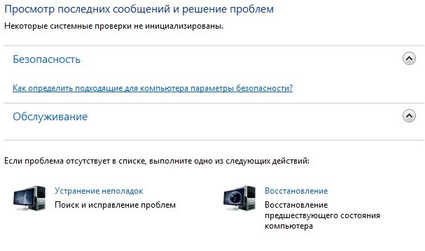
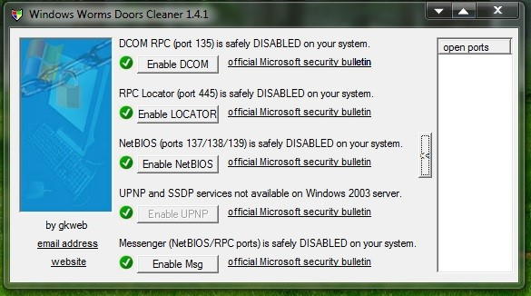

Знакомый смотрит ютуб через свой аккаунт на вин 10 и видео останавливается где то через минуту и идёт загрузка, причём на разных браузерах, если он смотрит просто без входа в аккаунт, то работает у него нормально, у его соседа тоже самое происходит, говорит жестко тупит, но я ради интереса, забил его аккаунт себе в браузер на вин 7 и нормально всё работает, что с аккаунтом что без. Возможности поюзать эту винду желания у меня нету, спрашиваю, может кто то сталкивался, потому что явно косяк не в браузере и не в аккаунте и не в сети сто процентов, косяк именно в самой 10
Я предположил что это copilot который они добавили, это ии, удалил его примитивным способом, но подозреваю что он не удалился, его так не видно в программах удаления, но он уже стоит и насколько я слышал, эта хрень делает скриншоты экрана каждых несколько секунд, хранит на жестком диске и потом сливает и я ему это сказал, но ему пофиг как и всем кто поставил себе 10 
я бы подозревал рекламорезки, какие расширения стоят у друга? Может в другом браузере попробовать?
нету у него расширений, я лично проверил на 2х его браузерах, меня просто на долго не хватает, этот примитивный вид самой 10 действует мне на нервы
и яж написал что проблема не в браузере, я чётко всегда определяю причину,
определил что сама 10, а дальше ковырять её не очень хочется.
Все нажатия клавиш, движение мышкой, всё что с флешки закину, скрины экрана, всё она сохраняет, я даже подходить к ней не хочу 
и если это рекламщики, то тогда почему на 7 работает нормально и стоит куча разных расширений и проблем нет вообще и не было никогда, единственное в драйвер нвидиа в 19 году июня месяца внедрили телеметрию, что приводило к зависанию игры, я сразу это просёк и больше его не обновляю, а если и нужно кому нить поставить свежий, то приходится её вырезать и тогда работает нормально
зачем тогда помощи просить если вы так точно диагностировали проблему и теперь ваша задача уговорить друга сменить ОС?
А если серьёзно, смотрите инструменты разработчика браузера, логи, в том числе сеть. Ютубовскую “статистику для сисадминов”
Если в сторону ОС копать - какие обновления прилетали, на систему, драйвера, есть история, журналы банально.
не собираюсь я его уговаривать и поставить 7 на новую машину кишка у него тонка, знаете как я себе решил проблему, я всё удалил, журналы, логи, всё что посчитал что мне оно не нужно, запуская Wireshark, ни оного лишнего пакета не уходит и не приходит, в режиме ожидания вообще ничего, трафик на нуле, сутки простоит и ни одного пакета не пролетит, вообще ни одного, летают пакеты только других устройств, вот я так умею решать проблемы, чтоб не вникать по мелочам, а сразу глобально снёс к примеру службу, решив всё одним махом 
Проблема, если честно, реально выглядит странно. Есть ли шансы, что пропускного канала просто не хватает? Может быть проверялось со входом и без в разное вресмя, когда нагрузка разная? Или все же прямо в течение одной сессии - вошел в аккаунт, просматриват, останавливается загрузка, тут же вышел из аккаунта, все пошло хорошо, снова зашел, снова останавливается?
да, именно так и происходит
А если войти в аккаунт, но другой?
у меня аккаунта нету, но его аккаунт работает на 7 хорошо
поэтому я и предположил что проблема не в аккаунте
он подключён к моему роутеру, я полностью контролирую сеть
Просто гугл, по видимому, иногда шаманит с аккаунтами. Мне, например, вообще сломали расположение элементов, да так, что пользоваться ютубом стало не комфортно. Обычный вид - видео, под ним комменты, справа другие видео из того же плйлиста. Мне же комменты сместили вправо под видео, оставив под них где-то 1/4 ширины экрана, все остальное заложили плитками с рекоммендациями (пришлось править устновкой расширения). Поиск по проблеме показал что так бывает с некоторыми аккаунтами и так они проверяют новые фичи. Я сильно сомневаюсь, что их игры с интерфейсом - источник проблемы твоего друга, но, учитывая странность проблемы, почему бы не проверить.
- Попробовать расширения - uBlock Origin и Enhancer for youtube
- Попробовать создать другой аккаунт. Правда они теперь вроде номер телефона требуют, но если у друга уже есть аккаунт, я думаю ничего страшного завести второй.
так проблема не нэте и не в аккаунте, у меня та работает его аккаунт. сетка одна, значит проблема в 10, других вариантов я не вижу
эдблок в роуторе, но даже если бы он, то и у меня тогда бы не работало, я не пробовал, не отключал его, надо будет попробовать как вариант, может как то он на 10 плохо влияет, не знаю )
без 100500 тестов это подземный стук как у меня был
провайдеры. роутеры. ДНС как роутер так и система/DoH браузера
настройки винды как раз 10ка
как вариант попробовать с обоих ПК
curl -O -k -H “Host: ash-speed.hetzner.com” --connect-to ::ash-speed.hetzner.com https://test.googlevideo.com/100MB.bin
curl -4 -O -k -H “Host: ash-speed.hetzner.com” --connect-to ::ash-speed.hetzner.com https://play.google.com/100MB.bin
имеете введу настроить ему стёк ? нет, это не поможет, у меня подозрение на copilot, так как места на диске для него не распределено, а скриншоты он штампует и видать он и глушит, для 11 надо 60 гигов под него выделять и 16 гигов оперативки, только под этот копилот ))) то есть 60 гигов под скриншоты )) а сам он вроде как занимает 800 метров на диске С, а дальше соединяется через сеть и живёт своей жизнью, что то типа чата gpt только на компе, имеет полный доступ ко всему, к реестру, полностью к компу, то есть комп больше не принадлежит владельцу, он может сам устанавливать и удалять что нить, вот я на него грешу, так как это ещё бета версия, поэтому всплывают косяки, но я думаю они их устранят, чтоб не спугнуть пользователей ))
ролики удалят, будут только те ролики, как это хорошо, картину создать, найти в поиске и так далее, как это круто и куча коментов со словами спасибо под этими роликами, создавая видимость типа всем новация понравилась и люди поведутся, я смог найти только 2 ролика, где возмущались и то иновские, все остальные нахваливали ))
А как он связан с гугл аккаунтом? Или речь шла про аккаунт винды?
Просто не понимаю, что ему мешает делать то же самое, вне зависимости от входа в аккаунт…
UPD: ещё помню были какие-то попытки ютуба бороться с блокироващиками рекламы, при чем именно с такими же симптомами, типа “все плохо грузится, тормозит и т.д.” когда адблок включен. Не знаю правда чем закончилось. Или это была борьба с другими браузерами кроме хрома… не помню уже
Только к твоему случаю вроде не подходит, т.к. работает же без входа, и ты упоминал, что расширений нет.
вот и мне стало это интересно, речь про аккаунт гугла и я не понимаю почему так происходит, а недавно случайно про этот копилот только узнал и буквально сразу у него это и началось, до этого всё было нормально
вобщем это какой то хайп “против вин10/копилота”. расходимся.
никаких технических данных
согласен, но может кто то столкнётся с подобным и будут технические данные
Я с подобным сталкиваюсь периодически, но без регистрации. У меня домен *.googlevideo.com работает без проксирования, остальное с проксированием и редко возникает ситуация когда ссылка с GGC не грузит видео, но если отключить проксификацию или включить для всего, то начинает работать. Пока возникает редко решаю передергиванием SwitchyOmega.
Пусть пациент пользуется двумя браузерами: с логином и без.
к сожалению switchyomega а может и другие “прокси” работают “странно”
ну может в режиме auto switch нормально и то не уверен
- “исключение” для сайта делает вроде как только для “главного” домена
- в режиме авто надо искать и настраивать все “домены” а их могут быть 10ки
youtube / ggpht / yimg / googlevideo / etc
кстати. хоть и через гланды …
тот же Daum PotPlayer есть в сборке с yt-dlp и играет “онлайн” тот же Ютуб и прочие
https://forum.ru-board.com/topic.cgi?forum=5&topic=51115&start=2660#12
Никакой копилот тут не при чём, не сходите с ума.
эта хрень делает скриншоты экрана каждых несколько секунд, хранит на жестком диске и потом сливает
Ничего подобного.
и я ему это сказал, но ему пофиг как и всем кто поставил себе 10
Вы всего лишь “насколько слышали” (следовательно в вопросе не разбирались и достоверность этих данных не проверяли), но уже выступаете с позиции превосходства над теми “кто поставил себе 10”. Не надо так. Превосходство обретается лишь получением знаний.
Теперь знания (ну и превосходство, конечно):
- Скриншоты будет делать Copilot, а функция Recall.
- Recall дебютирует лишь в Windows 11 24H2.
- Recall не может работать на процессорах без ускорителя ИИ, причём оный ускоритель должен ещё и обладать определенной производительностью. Такой производительностью пока обладают лишь процессоры Snapdragon X.
- Recall будет хранить собранную информацию локально и в зашифрованном виде, отправляться она никуда не будет.
- Наконец, Recall можно просто не включать.
Таким образом, никто никаких скриншотов в Windows 10 не делает, даже если бы вашему другу очень и хотелось. Ни аппаратное обеспечение, ни операционная система этого не могут.
Что же общего между соседями… хм, может, провайдер? Да не, бред какой-то - точно копилот! 
Вот это Microsoft гении не иначе запускающие LLM такого уровня на ПК рядовых пользователей пока весь мир ломает голову над проблемой оптимизации ресурсов таких моделей.
P.S. А если серьезно, то советую вникнуть в вопрос чутка глубже и не транслировать аки бабки у подъезда домыслы и слухи
В каком браузере у знакомого тормозит? У меня на десятке в браузерах на основе Firefox часто прям так же, видео просто перестаёт грузиться через минуту или подгружается 10 секунд видео раз в несколько минут, а в Chromium-ных никогда не тупит. Что с аккаунтом что без. С расширениями и без. С впном и без.
Я думаю это сам Гугл что-то там химичит и не привлекая лишнего внимания ломает Ютуб на Firefox-овых браузерах, постепенно вынуждая переходить на Chromium.
А то что у вас всё отлично, а у знакомого проблемы, может быть как раз из-за того, что Гугл это делает аккуратно и неявно, чтобы было трудно воспроизвести проблему. Либо версии браузеров отличаются на разных версиях ОС, либо ютуб по юзер-агенту различает, как себя вести.
да даже Chromium-based по разному себя ведут иногда
у меня вон Brave не заходило на https://forum.nag.ru/ и еще пару адресов без каких то внятных ошибок. открыл в НЕМ ЖЕ но в режиме “инкогнито” (тор там отключен) и адреса заработали… а через какое то время САМО стало открываться и без инкогнито. список аддонов и их настроек не менял
было что flightradar ругался что пропали полимеры (OpenGL или что то там) но после обновления “chrome” или самого сайта все чинилось
Беглый поиск по форумам и клич по знакомым дал понять что такое поведение (стоп после минуты) наблюдается и на официальном Андроид приложении самого Ютуба после их похода против YouTube Vanced(там как раз таки поломка была характерна прекращением загрузки примерно через минуту)
Вроде у yt-dlp была как раз такая задумка чтобы предотвращать подобный троттлинг грузя чанками и он доступен на всех оськах.
есть еще https://streamlink.github.io/
он для VLC находит прямые ссылки на видео
Именно у него так и работает на десятке, минуту идёт и потом загрузка и тупо висит, но не всё, некоторые спортивные ролики работают нормально, без входа в аккаунт большая половина роликов работает, но тоже некоторые виснут, я немного этот комп поюзал, но ничего не нашел.
У меня на семёрке всё ровно, проблем никаких, поэтому я сделал вывод, сто пудов проблема в десятке и если бы он мне не сказал, то я бы и не узнал что такое есть поведение, у меня никогда такого не было и когда мне подобное говорят, я просто даже не понимаю о чём речь, поэтому и решил написать спросить, но прикол в том, что все поголовно верят во что угодно, только не в то, что проблема в самой десятке, я походу один кто это просёк и сделал правильный вывод, а решение, ну это надо эту хрень ставить самому и юзать, а желания просто нет заниматься ерундой. Не исключаю что у кого то и на семёрке подобное происходит, я не знаю, свою я просто запилил под себя.
Поэтому если у вас в телефоне или в холодильнике плохо работает нэт, то это не говорит о том что проблема в провайдере или где то там, в 90% проблема у вас, по факту причина это телеметрия, кто не знает что это, почитайте, только ищите минусы а не плюсы ))
Поэтому если у вас в телефоне или в холодильнике плохо работает нэт
Такое лучше под фаервол поставить с роутера и через локальную прокси пускать только нужные приложения вроде браузера в интернет. Я ненавижу хромиумы, у них похоже вообще нету настроек прокси и они юзают системную прокси. Не даром же самые шпионсккие браузеры на хромиуме (brave, edge, yandex)
Ради эксперимента переустановил десятку с форматом диска С, поставил купленную им с флешки, удалил службу обновлений до подключения нэта, чтоб ничего не залетело, так как началось по его словам это недавно, грешили на обновления, короче, ничего не изменилось ))
Я вытащил флешку, говорю давай семёрку закину и сам увидишь, а у него глаза стали бешеные, и такой орёт, не надо мне её ставить, в его логике, пусть ничего не работает, зато десятка, это жесть конечно, подобное я наблюдал помню в магазине какому то деду, говорю не гони, какая десятка, а он чуть не набросился на меня, я понял что с ним всё, это стеклянные ворота.
Вы поймите, у вас у всех десятка и у всех одни и те же проблемы и создаётся видимость что это на любом оборудовании, ставьте семёрку, линукс, пробуйте, проверяйте и тогда картина будет яснее, а так вы боритесь с тем чего не существует и у вас ничего не получается, потому что вы не знаете причину, а метод тыка не всегда прокатывает или прокатит, но не надолго
Есть несколько устройств. И с WIn11, и с Win10 - и описанных проблем не наблюдаю. И да - системы оригинальные, не сборки. Включено автообновление, все последние обновления стоят.
Возможно зависит от места обитания и раз подобное происходит, значит могут это делать на уровне винды, они и раньше это не скрывали что могут и на практике это показали, я аж сам прикололся, а каким образом не знаю. я так поюзал. службы поотключал и ничего не помогло, походу эта хрень в системе, там нужно только выпиливать и не факт что поможет, когда то давно я боролся с семёркой с похожим явлением, фишка была в обновлениях и надо было вычислить в каких, а их там очень много, но нашел способ, главное чтоб оно не проникло, так как перепишет файл и не поможет больше ничего, не откат, вообще ничего только переустановка системы, а в десятке изначально это в системных файлах, поэтому отключение обнов не имеет в ней никакого значения как я понял, вычислив какой нить файл, удалив его, она больше не запустится и раньше это называлось вирусами, шпионский модуль, а сейчас называют телеметрией, ну так, чтоб никто ничего не понял, главное что все это схавали, расчёт был именно на новых пользователей
Вы же читали мое сообщение про ровно такую же проблему на Андроид устройствах с официальным приложением Ютуба, но даже так не сделали вывод о дефектности теории “во всем виновата Виндоус 10”(спойлер виноват сам Ютуб и их новые алгоритмы по выявлению сторонних клиентов по типу ReVanced умеющих в мимикрию под оригинал) И вот после этого вы приводите в пример других людей в пренебрежительном ключе и с фразами про “стеклянные глаза”))
Если бы был перепрошитый этот андроид, то думаю и проблем бы не было, вы просто поверили в новые алгоритмы ютуба и на этом сделали вывод что виноват ютуб, вам просто так хочется в это верить, этож проще чем перепрошить телефон и так все верят в то что им нравится, тупит у всех, ну значит так нужно и типа ничего с этим не сделать, так же и виндой, всё тоже самое, я говорю что многие ошибаются и не стеклянные глаза, а ворота, наверно вы так и не поняли о чём я )
Как раз у знакомых Андроид не стоковый(Lineage с gapps, клиент официальный) и проблемы тоже наблюдаются. А ещё была замечена такая же проблема на Дебиан 11 с Firefox, но я уж не стал писать ибо побоялся что это слишком сильно ударит по вашей психике ибо шаблон-ответ про “телеметрию и/или нужно прошивать” не подходит, а значит это вынуждает начинать пересматривать свои верования что очень болезненно
P.S. так вы и не ответили что в итоге с вашей теорией о “во всем виновата Виндоус 10” в контексте наличия ровно такой же проблемы на других системах и других клиентах(и кто же виновен, если версия с Ютубом как источником проблемы не вписывается в вашу веру)
Значит не всё там в порядке на дебане или андроиде раз наблюдаются такие проблемы, признак задуматься почему. Жесткую телеметрию внедрили в 7 винду с марта 16 года, я не знаю, но возможно и во всё остальное с того момента и так как вы не берёте во внимание и вас не беспокоит что все движение мышкой, все нажатия клавиш и тд. сливаются куда то там в вашей 10, то думаю диалог вести дальше бессмысленно, так как ваша теория основана на ложных убеждениях
Проблема так и не была решена, разные версии 10 винды ставили и пофиг, как тупил ютуб, так и тупит у него )) Говорю давай воткну 7 и забудешь это как страшный сон, говорит не надо  я в шоке, пусть ничего не работает, зато десятка, это уже диагноз
я в шоке, пусть ничего не работает, зато десятка, это уже диагноз 
Windows 7 ещё с января 2023 официально EoL, к ней больше не выпускается никаких обновлений безопасности, и использовать ее в наши дни это в чистом виде слабоумие&отвага. Ну плюс ее уже довольно много софта не поддерживает.
Автор активно занимается подгонянием желаемого под действительное, игнорируя что ровно такие же проблема проявляются и на других ОС и платформах, то есть с ОС это не связано.
Ну и да, перед тем как писать глупости, я бы ещё посоветовал разобраться в том, как работает эта “телеметрия”. Наверное ему будет сюрпризом узнать, что это вообще не про “все движения мышкой и все нажатия клавиш куда-то сливаются”, там такого даже близко нет.
обновлений безопасности это и есть телеметрия, безопасность от чего ? если включён удалённый доступ к компу, вот и приходят эти обновления, чтоб типа кто то к вам не залез со стороны, а если у вас этого всего нету, доступ закрыт, то зачем вам нужны эти обновления, вы просто не понемаете как оно работает в целом, любая фишка на компе это прога, хоть системная, но прога, а в целом назвали винда, то есть винда созданая из большой кучи разных прог и когда понемаешь что это и для чего, вот тогда делаешь так, как считаешь нужным, а когда полный ноль, то устанавливаешь обновления, никого не хотел обидеть, но это факт
Чел, ты только что такой бред написал, что даже по пунктам отвечать смысла нет.
Не в обиду, но ты кажется вообще не имеешь ни малейшего представления об информационной безопасности, устройстве софта и ОС, ну и с причинно-следственными связями кажись проблемы.
Скажи честно, в школе ещё учишься? 
вот смотри к примеру, это в панели управления заходишь, открываешь подключения к удалённым рабочим столам и у меня вот так, видел когда нить подобное ? и это просто один маленький пример
или вот смотри, там же в панели управления центр поддержки

и какие обновления ? обновления чего ?)) и это самое простое, сможешь так сделать ?)
или вот, открытые порты, у меня так, а посмотри у себя, в школе наверно такому не учат

Обычная тактика против троля — игнорирование. Тут раньше был один пользователь, который ежедневно жаловался на нерабочий интернет в Windows XP.
Ну вообще то до сих пор можно сделать, чтобы на неё приходили обновления от Windows Embedded 7, так что в этом плане проблем пока нет. Firefox до сих пор обновляется, SEP так же через забугорный прокси и обновляется, и работает. Так что при желании до сих пор можно поддерживать эту ОС в неплохой безопасности.
У embedded-версии Extended Security Update Year 3* только до октября 2024, так что в любом случае так себе затея
Так июнь на дворе. Да и опосля вовсе не факт, что поддержку не продлят.
del.
Надеюсь вы хоть потом поймёте, что это попытка закрыться от неудобных мыслей придумывая все более безумные сообщения натягивая бедную сову на глобус(в вашем случае это удаленная диагностика Дебиана при условии что в другой ветке вы признавались в отсутствии знаний о Линукс). Ну а пока же оставлю вас тогда наедине с вашими верованиями ибо прогресса не видать, так вы ещё и забыли мои тезисы и факты из прошлых сообщений…
P.S. Но если вдруг наступит озарение, то повторю свой вопрос третий раз. Как так выходит, что на разных системах(о ужас не Виндоус и где нет телометрии) с разными клиентами имея разные настройки и разных провайдеров наблюдаются полностью идентичные проблемы? И вишенка на торте конечно же просто совпадение, что началось это ровно тогда, когда Ютуб начал бороться с блокировщиками рекламы и сторонними клиентами))
что началось это ровно тогда, когда Ютуб начал бороться с блокировщиками рекламы и сторонними клиентами))
А почему new pipe тогда работает как и прежде на андроиде? Он разве не главный антирекламщик для нормасов на их телевизорах?
Мы с вами говорим на разных языках. У меня разные провайдеры и одна и таже винда, одни и теже настройки и работает всё чётко, вообще всё, ну не считая того что заблокировали реально, где без гудбая не обойтись или впн, а так всё остальное работает нормально и работало нормально всегда.
Когда я сам лично 3 раза переставил ему 10 винду и проверил ютуб, то видео через минуту останавливается и что я должен думать, у меня работает хорошо, у него не работает и какой я должен сделать вывод, подумайте сами, возьмём любое другое устройство к примеру, один и тоже провайдер, у меня работает хорошо, у него нет и догадайтесь почему, скриншоты что я скинул, это так, мелочи что я наваял, это просто безопасность и не больше. А сама зараза сидит в системных файлах и появилась она в июне 15 года, сразу перед выходом 10 и пришла в обновлениях и я нормально потратил времени чтоб от неё избавится, надо ведь что всё работало и не было этой фигни в системе. С выходом этих обнов, у меня файрвол начал блокировать всё, поэтому я заметил это сразу, а у вас файрвола никогда не было как и многих, поэтому вы упустили этот момент из вида, а изначальная задача файрвола была защитить пользователей, вот он меня и защитил и показал что что то пошло не так, а дальше дело техники
Если хотите проверить, то ставьте семёрку 14 года, а то и позже, перед подключением к нэту, снесите службу обнов, всё необходимое ставьте в ручную и увидите сами что всё нормально работает и от этого отталкивайтесь, с дровами тоже поаккуратней, чем старее тем лучше.
А так конечно в ногу со временем, у всех всё стоит новое, уже заряженное по полной программе, поэтому у всех работает одинакового и все борются с тем, чего не существует, кто то там сказал типа ютуб виноват и программу все эту приняли, а кто это сказал никто не знает, но главное версия удобная, похожа на реальность и это я написал для тех, кто застрял между мирами, не определившись, где реальность а где нет 
Не хотел я писать, ну ладно. В общем как я понял и убедился ещё раз, ограничивает сама 10 винда просмотра ютуба, они знают что это он, возможно по номеру процессора, кому то покажется это невероятным или даже бредовой идеей, но я сталкивался с подобным ещё 2006 году, похожая технология. Я думаю скоро любители десятой системы и выше, будут смотреть только то, что разрешили, играть в то, что позволили, пока только идёт обкатка, смотрят на реакцию, спрыгнет с 10 или нет и пока побеждают, это судя по реакции этого кренделя, пофиг ютуб, главное десятка, это уже зависимость, как бабушки у телевизора, им тоже не расскажешь, по телику идёт просто поток, а тут точечный, индивидуальный под каждого пользователя и я знаю что опять набросятся некоторые на меня, попытаются засмеять, по типу фольга и подобное, но это будут те же люди, как и этот крендель, они уже давно все на одной волне


P.S. А Винду можешь хоть 100 раз переустановить это не снимает временный бан от Ютуба который пометил аккаунт или отпечаток браузера твоего друга как “неблагонадежный” решив, что он использовал механизмы обхода рекламы(за деталями прошу на 4PDA в ветки Vanced/ReVanced там люди давно уже описали этот процесс)
Чисто для протокола уточню, что на этот вопрос заданный дважды в открытую автор так и не смог ответить(при этом вместо ответов было лишь придумывания “неправильной” настройки Линукс в которой по заявлению самого автора он не разбирается и перевод темы на Виндоус когда речь не о ней)
P.S. Но чисто по человечески я очень надеюсь что все это был просто неуместный и толстый троллинг
Это довольно нишевый продукт и главным является Vanced и его вариации что мимикрируют под официальный клиент
Вы наверно думаете что вы умнее всех и точка зрения правильная только ваша. Люди там какие то описали, У меня работает его аккаунт, что тут не понятного и отвечать вам на глупые вопросы я не собираюсь. Если у вас нет реальных идей или решений, то и нечего встревать, а ссылаться то что пишут на заборах, причём неизвестно кто, не исключено что боты, по статистике 80% ботов захватило нэт, с час даже трудно найти что нить реально написанным человеком, вы даже бота мне напоминаете, не исключаю что вы один из них )
Вы наверное тоже.
Как и возможно вы.
Уже кучу примеров привели, что и на других системах проблемы бывают. И что на WIndows 10\11 со всеми включёнными обновлениями всё работает прекрасно. Но вы себе в голову что-то вбили и вас не переубедить. Или просто игнорируете неудобные для вас факты.
Какие примеры мне привели ? Что кто то там сказал, это что пример, это не пример, это тролинг. Пример привёл я, конкретный, в подробностях и даже предположил причину, в которой я уверен на 98%, так как я юзал годами и знаю как оно устроено и как работает и на основе этих знаний делаю предположение, все кто сталкивался с подобным, никто из них не решил эту задачу, находили удобную для себя причину и на этом останавливались, подстраивались под проблему. Вот лично вы я что то не заметил чтоб вы что то сказали, ссылаетесь на кого то, вам привели кучу примеров, то есть в вашем понимании вот те кто то для вас авторитет, так как вы на одной волне и думаете одинаково и любое другое мнение которое противоречит вашим взглядам, сразу игнорируется. Могу предположить, что вы один из тех кто отвечал, только под другим ником, создавая видимость толпы, я тоже так умею, но не делаю никогда, слишком просто и не интересно
Вы что не будь помните с момента выхода 10 ? Уверен что ничего, а я помню, помню как по всем центральным телеканалам целый месяц трубили что это зло, слежка, манипуляция и прочее, месяц они орали, а потом резко тишина и больше никто никогда об этом не говорил, про плаченные юзеры стали писать и рассказывать как это хорошо, а о том что вас пасут об этом ни слова и даже если и заходит об этом речь, то ответ стандартный, нечего скрывать. а тот кто с этим не согласен, значит не хороший человек. То есть если человек который не хочет чтоб его пасли, значит он не нормальный и очень многие приняли эту программу, для меня это удивительно, я думал что это невозможно, но практика показала что я ошибался
Чувак, если ты сейчас не шутишь, то иди к врачу и лечись, серьезно.
Если ты “не хочешь, чтобы тебя пасли” (это правильно, я сам такой же параноик), то хотя бы изучай базу инфобезопасности и приватности нормально, а не как школьник средних классов который какую-то херь прочитал в интернете или даже выдумал и вбил себе в голову. Логическое мышление прокачивай хотя бы, а то у тебя видно что с этим плоховато. Потому что сейчас ты вообще не в ту сторону копаешь, ищешь проблему там, где ее на самом деле нет, при этом отказываясь в упор видеть факты говорящие об обратном, и в итоге тратишь внимание и силы вообще не та то, на что стоило бы, если для тебя действительно важна приватность и безопасность. Тебя водят за нос, а ты и рад 
Я не айтишник, но по компам моё направление защита и безопасность, всё что связано с доступом из вне, я считаю это угрозой, пусть это будет обновление, не важно, это доступ из вне, всё должно быть под контролем, поэтому лечится нужно именно вам, раз вы самых простых вещей не понимаете

Чувак, если ты так троллишь, то мое восхищение, это настолько толсто, что даже тонко.
У него заработал ютуб сам по себе, месяц может прошел, не знаю, возможно до следующей вспышки. Это такой вид пользователей, которые ждут, дрессируют их, месяц не работало, потом опа заработала и так каждого кто пользуется 10, должны знать своё место. Кого то это устраивает, а кого то нет, можно сказать на любителя, сказали в этом месяце смотреть ютуб не будешь и всё, чтоб без вопросов ))
ТС несёт такой шизофренический бред, что топик нужно закрывать, так сказать во избежания массовой индукции!
Это 6A22 по ICD-11. 3% населения этим страдают, оставьте его.
Вы забыли про слона в вашей колонии комнате, рассуждая о причинах тормозов.
Представьте новый дивный мир где рутуб уделывает всех и ютуб, и туда устремились все звезды шоу и бизнеса. Даже в таком случае резкое закрытие ютуба несет плохо просчитываемые риски. Инерция масс это физика, которую нужно учитывать, чтобы избежать травм.
Не сомневайтесь, слон в целом умней вас, по отдельности.
Сформулировано и записано на правах ICD-11. Все совпадения имен и товарных знаков случайны. Животные при записи пострадали, но не слон.
А может всё таки полечим? Пол-чайной ложки haloperidoly vulgaris per os три раза в день после еды творят просто чудeса!
Это устаревший препарат, сейчас используется в качестве карательных мер. Лучше начать с ципралекса, дальше сероквель. Но и у них много побочных действий (гиперпролактинемия). Пока чудесного лекарства не изобрели.
Вы собрались корректировать F20 - F29 СИОЗС? У меня для вас дурные новости!
Типичное лечение в любой психиатрической лечебнице. Если “легкие” препараты не снимают негативную симтоматику переходят на “тяжёлые” (в зависимости от лечащего психиатра и настойчивости жалоб пациента на побочку). Написали бы уж эти новости тогда.
А новости такие. Ваши рекомендации не верны.
Учитывая тяжёлое состояние ТС и ваше нежелание применения пусть устаревший, но эффективный haloperidoly vulgaris, то коррекцию состояния следует начинать как минимум с Triphtazine, но не с SSRIs.